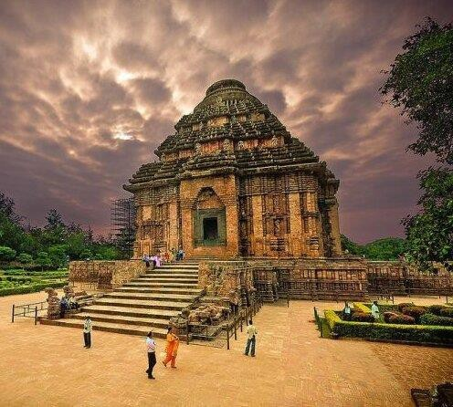
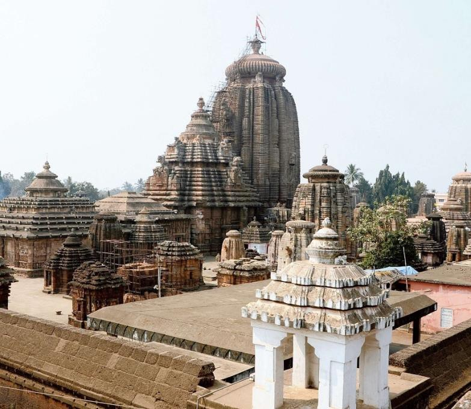
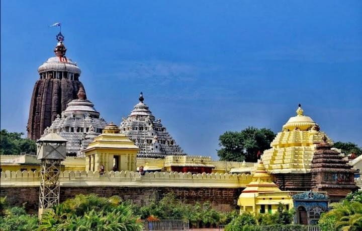
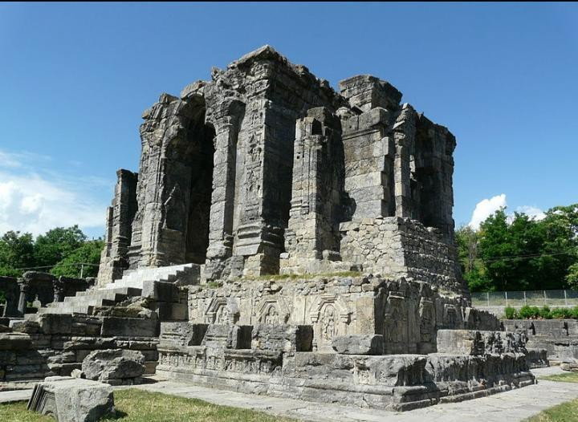
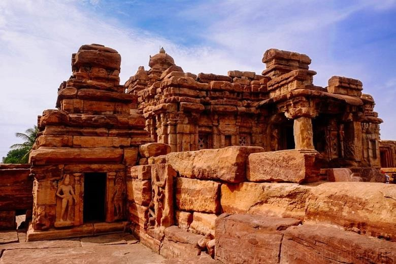
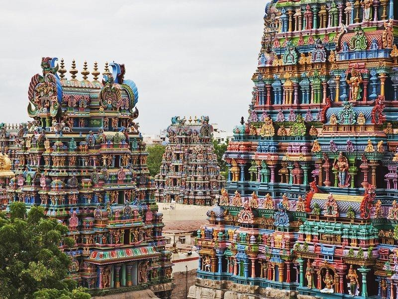

Temple Architecture
Greetings of the day everyone, this is Khushi and I am pursuing Diploma in Architectural Assistantship. I hope you liked my previous blog. So, in this blog, We talk about Temple Architecture.
In HINDU ARCHITECTURE we have many varieties, styles and features. It is also known as TEMPLE ARCHITECTURE.
➢NORTHERN HINDU STYLE
➢CENTRAL HINDU STYLE
➢SOUTH HINDU STYLE
NORTHERN HINDU STYLE
❖ This style had spread over at least 3rd to 4th part of northern India.
❖The earliest monument started in the state of Orissa, its ancient name is Kalinga.
❖ It is offered strong resistance to Maurya’s but finally subdued to Ashoka in 260 BC.
❖ After Ashoka’s death Kalinga more powerful under kharavela.
❖Beginning of this group is seen at Bhubaneshwar where there are thirty temples.
❖The most important are the temple of Jagannath at Puri, Mahashiva gupta yayati, sun temple at Konark.
❖The other groups are confined to some area such as at Khajuraho, the latest of entire series is shiva temple of kendariya Mahadeva at Khajuraho.
TEMPLE OF ORISSA GROUP (KALINGA)
❖SUN TEMPLE OF KONARK
The magnificent temple was therefore built to glorify.
Surya “the sun god at Konark.
The temple of sun god, Surya’s, the source of life, origin of light, the dispeller of darkness, and sin, the source and instrument of purity and heath is unique in its construction.
The plan of this temple was that of genius and its scale was too great for its execution.
The temple is formed like a, ratha or wheeled chariot being
carried by seven.
Horses symbolizing the seven rays of the sun who blazes his way through the heaven and proceeded by the charioteer Arun.
The temple resting on a large platform with 12 giant wheels.
It is curved with erotic surfaces and decorated with medallion on the spokes a hub.
On its three sides, in the middle segments there are three subsidiary shrines with stairways leading to niches each containing the life – size image of sun gods minutely curved.
The wall fully sculptured with beautiful dancers playing or musical instruments.
Two gracefully carved elephant guard its entrance.
The width of the cubical portion or, Bada of jaga Mohan is
twice its own height.
Upper tapering part, pida “and which is crowned with a melon shaped 'kalasha' or amalaka is flueted.
Outer surface of Bada sculpted with as many as fifteen hundred elephants in different patterns, along with soldiers riding on horses in a bottom row.
Many mythical animals in second row.
In the third row depicts the "maithuna rituals". It represents
symbolism o prakriti ana purusha.
The top PIDA the pyramidical tower consist of three tiers.
In order to sustain the weight of the huge kalasha over the pida the entire ceiling is strengthened with iron grid.

❖LINGA RAJA TEMPLE AT BHUBANESHWAR
The temple had originally only two apartments.
Duel and jaga-mohan, and the Nat mandir (dance hall), bhog mandir (offering hall) are added a century or more later.
The entrance is flanked by two large stone statues of lions. Most attractive feature of this temple is the Sri mandir richly building entirely of stones.
Bada is vertical one third of its height and above.
It has parabolic curve rising to the height of 38m from the ground.
Over it is a necking or Beki above which rest the melon shaped fluted disc or amal-sila and crowned with KALASHA.
Outer surface is carved with gods, goddess’s nymphs.
A shiva Linga 3m height and 2.5m diameter is in installed in garbhagriha.

❖TEMPLE OF JAGANNATH AT PURI
The temple is merely a replica of the temple at Bhubaneshwar.
This temple is not so impressive in its treatment.
The presiding deities at Jagannathan, Balabhadra and Subhadra.
Every year in the month of June and July devotees in large number of gather at puri in order to participate in the car festival when the image of the three deities are in the large procession 3 highly decorated,, rathas``pulled by ardent devotees.

❖TEMPLE IN KASHMIR
THE SUN TEMPLE AT MARTAND
The temple is built by king lalitaditya is located about
35km from Srinagar, Kashmir , martand.
The temple is situated on a stupendous hill top enclosed in
61mX 43m quadrangle containing a cluster of 84 sculptured columns of gracco roman style.
The number of 84 is also significant as it is product of 7 and 12 i.e 7 days of week and 12 months of the year.
The temple consists of portico for sun worship and is connected to cella over which there was once pyramidal roof rising to a height of 23m.

❖THE TEMPLE OF KHAJURAHO GROUP
The temple is raised in tier over tier of sculpture excellence with stone carving of griffins, nymphs, gods, demons and couples.
CENTRAL HINDU STYLE
EARLY CHALUKYAN ARCHITECTURE
The architecture falls into two distinct types:-
I. ROCK-CUT CAVE
II. STRUCTURAL
ROCK-CUT CAVE TEMPLES AT BADAMI

• The chalukyan capital city Badami was protected by a fort was surrounded by a moat.
• The superfluous water of agatyathirtha was a sporting place of the royal families.
• Badami was also a religious center.
• Goddess Banashankari was a presiding deity.
• The most interesting from architectural point of view is a series of cave temple hewn from top to bottom in the scrap of a southern hill called ran Mandal.
• These are Brahminical in nature, one shavite, two vishnavites, and the fourth belongs to jaina.
Structural temples
In addition to the rock cut cave temples at Badami chalukyas also built several structural temples along the edge of the lake and hill tops.
The early chalukyas combined some features of contemporary north and south Indian style of construction.

Style of Construction
Which is characterized by high platforms, pithas ornate door frames, plinth molding, vestibule.
SOUTHERN HINDU STYLE
South Hindu style is also known as dravida style architecture.
In south style temples consist essentially of a square chambered sanctuary topped by a super structure, tower, or spire and an attached pillared porch or hall(mandapa) enclosed by a peristyle of cells within a rectangular court.
The origins of the Dravida style can be observed in the Gupta period.

Thanks everyone for showing patience. Be alert guys I will post more on History of Architecture.
Feel free to give feedback so that I can improve my content.
• KHUSHI
Widget is loading comments...